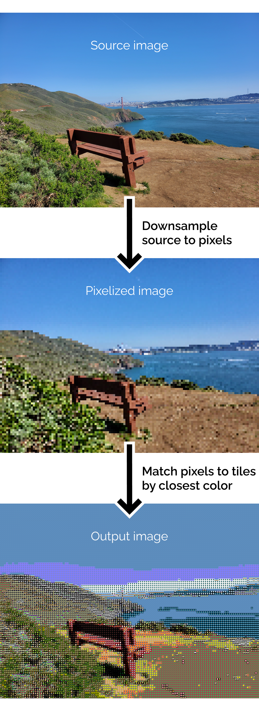
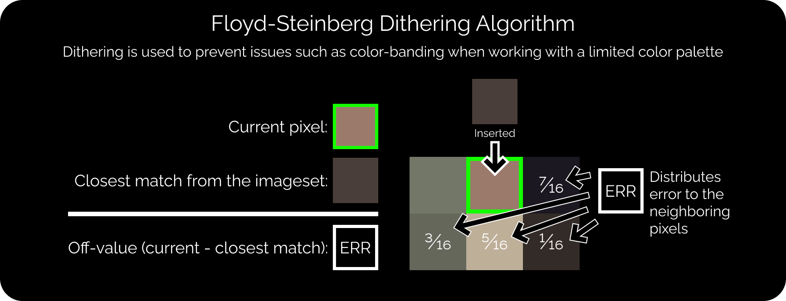

Engineering
CompSci
Art
Activities
Engineering
CompSci
Art
Activities
I have played violin since kindergarten and later branched into music composition and arrangement. I also picked up my sewing skills from my grandma and mom around 3rd grade and started projects in middle school. I was introduced to graphic design with Figma during the pandemic, and later oversaw the visual design for GunnHacks, the annual hackathon hosted by Gunn High School.
Currently, I am a member of the Ward Melville Orchestra. I practice art in the forms of music, fabric, graphic design, and drawing.
Key projects are highlighted with stars.
2023
A gourd made into a water bottle. Grown, dried, and sealed over the course of a year, across from 10 to 11th grade (16 to 17 years old)
After moving to Long Island, it was the first time in my life I had a yard and space to garden. When it came time to start the garden in spring, I had an idea to grow and make a natural water bottle using gourds.
The whole gourd growing and water bottle-making process was quite a learning and fun experience for me.
In the spring, I obtained the seeds from Home Depot and planted them in a line next to a fence. Throughout the summer, I took care of the plants which slowly meandered up the fence, dangling their fruit below. Soon, it became apparent that I planted a few too many, as the vines took over the entire corner of the garden. Rookie mistake!


In the fall, after the gourds had fully matured, I cut them off the vine and put them in mesh bags to hang. For a good place to let them sit, I dangled them off a chair on the porch.

In the next spring, after the winter, they were about as dry as they were going to get. Now, the complicated part began. These gourds had taken a whole year to arrive at this step, so I was extremely careful with the following steps. Choosing a sunny day in April, I cleaned the mold off the best gourds with water and sandpaper. Cutting them open, I shook up the gourds to dislodge the seeds and remove them, leaving a perfect empty shell.
To really get the inside clean, I used gravel to clean out the residual membrane. In the next step, I poured molten beeswax into the gourd and gave it a thorough inner coating. I then collected the leftover wax, mixed it with mineral oil, to create some easy wood polish, and buffed up the outside.
Despite the long timescale of this project, I greatly enjoyed every step along the way. The success of crossing my gardening hobby into my maker mentality left me excited for future possibilities, and for expanding my projects to new and interesting fields.

2022
A large collaborative Christmas gift involving "Bad Apple!!", image processing in C#, music arranging, and recording. Done for the holiday season of 11th grade (16 years old).
Every year at Gunn High School, the orchestra holds a white elephant gift exchange. In 2022, alongside a team of seven others, we sought to make a cover of Bad Apple!!. The project was ambitious, as we wanted to recreate every component in it, from visual elements, and song arrangement, to performing the music. We had a complex challenge ahead of us.
I contributed on multiple fronts of this project, as well as the final stage to integrate all recreated components into one product. With my knowledge of programming video and image processors, I was in charge of the creation of the video. Using my experience in musical arrangements and playing violin, I was also involved in the arrangement of the song for different instruments in our group.
To create the video, based on the experience gained from my previous "Geckoinator" mosaic maker, which replaces pixels in an image with smaller tiled images, I made an adaptation of the software for the new purpose. I input the frames of Bad Apple into my program and then replaced each pixel with a "light" or "dark" image based on brightness. I ran the program in batches of 1000 frames over the span of six days. Once the frames were ready, I utilized FFmpeg to stitch the video together.

For the music arrangement, with 5 violinists, 2 cellos, a trumpet, and a voice, we had to create something new for our unique group composition. I started off by creating the backbone of the score, adding in all the main rhythms and melodies. Then, my friend finished the arrangement, filling in the gaps, polishing, and proofreading. To push our available instrumental range beyond a classic violin, I recorded the Violin V part using my Yamaha 5-string electric violin.
My final task was to make a credit frame, which I created using my Figma skills, as well as assisting in the design of the bilingual captions. Then the video, audio, captions, and credits, were combined together to produce the final video.

2021
A customizable mosaic maker in C# and one of the most complete and advanced piece of software I have created. Started in 9th grade (14 years old).

I wanted to design something that could create mosaics from a selection of smaller images.

A mosaic maker replaces pixels in an image with smaller images pulled from an image set that closest matches each pixel's color. As my set, I used a collection of images I collaboratively drew with a friend of mine known as the Gecko Collection, thus I named this project the "Geckoinator". The code is written in C# and built upon my experience and interest in image processing.
Generating the mosaic can be divided into two primary steps: pixelizing and tiling. After the user inputs an image, in pixelizing, the image's quality is reduced to the desired amount (this controls the resolution of the final output). Then, in tiling, each of the new pixels is replaced by a smaller image that closest matches the color of that pixel.
After the basic framework was finished, I realized there was a problem with bands of color forming due to the fewer available colors in the image set. To fix this issue, I introduced a feature to improve the quality of the images known as Floyd-Steinberg dithering. Dithering in graphics is a technique using a combination of colors placed next to each other to create an illusion of an intended color. An example would be early comic books, which were limited by how many colors they could print and commonly employed this tactic. This helps eliminate color banding by smoothing the transition between two colors. It also increases the accuracy of the colors in the output.
Floyd-Steinberg dithering works by scanning through an image pixel by pixel. On each pixel, the difference between the original color and the closest available color is added to the neighboring pixels in a predetermined pattern (as shown above). Thus, instead of the error being lost with each pixel, it is preserved in other pixels.
This algorithm is integrated between the pixelizing and tiling steps and applies the error dispersion to the entire image. This addition greatly improves the color depth and appearance of the output images, especially when viewed from a distance where they can even be passable as unedited images.

I also introduced batch processing and multithreading in order to be able to process videos and of course...(best experienced in full 4K and fullscreen)
I would probably consider this one of my, if not, the most technically challenging programs I have ever written. This used a lot of skill involving array processing and algorithms.

2021
This portfolio website you are reading right now, written in just HTML and a lot of CSS, started in 9th grade (14 years old)
This website is the product of multiple years of development, designs, and redesigns.
I first received inspiration for this project from a computer science course I was taking. The second to last assignment was to make a homepage for yourself using HTML, CSS, and JS. With their lesson on web development fresh in my mind, I got to work. Although it was far from a serious attempt, I saw potential in my early prototype.
Sometime later, I returned to start a serious attempt at a personal website. Before I could get started, I wanted to have a design down. For this attempt, I was still very experimental with my design. I wanted to try to emulate some elements of Art Deco and produce something more unique. Although not a refined product yet, this version of my website would lay the groundwork for what comes next.
So, I was back to the drawing board. The next attempt would be a complete overhaul of the website. I wanted to simplify things, so I decided to split each category into its own page to make the organization more clear. For the new color scheme, I used a calmer mint green background and white accents. After endless experimentation, I settled on the current square tile style with a pop-up window for description. All of my prototype versions can be found here.
One obvious observation of the previous incarnation of my website is the abysmal loading speed, mostly as a result of overusing JavaScript. Thus, My primary goal was to not use JavaScript at all in the current version. This was the biggest head-scratcher of the project. However, despite collapsable menus and filters at one point, I made my website fully functional without any JS!
By now, my project list had grown substantially. I had over 80 different projects that all needed descriptions, links, and photos. Writing out items in the ide was dull and time-consuming, so I needed a better way to organize and translate projects into HTML. My solution was to create a spreadsheet. This stores all the information, from descriptions to categories to year. Based on the structure I created, I wrote a C# program to convert the spreadsheet into HTML, separated by category. After final checks, that code makes its way onto this website, and here we are!
Website Github • Cs50 Website • Old Website • Old Website Github • Figma • Spreadsheet • Translator Github
2021
A 3D figure based on the icon that I often use as my profile, designed in 9th grade (14 years old).
This project taught me how to extrude shapes from images by tracing in Inventor. I plan to take this figure on any trips I go on as a personal symbol. GunnHacks 9.0 was the first event I took it to, and I intend to keep using it into the future.


2021
A hackathon project in the form of a Unity game based on chess created with a small team of friends in 9th grade (14 years old).
Every year at Gunn High School, the United Computations club would hold GunnHacks. Gunnhacks is a hackathon where you can get together with up to 3 others and work together to create a project.
Before I became an organizer for GunnHacks 8.0, a couple of friends and I participated in 7.0. For our project, we decided to make online chess, but with a twist! There would be a set of bonus rules that can be added to each game and combined to create a unique experience. My role in this project was management and music, and I also contributed to the code, art, design, and ideas.

For music, I composed 3 tracks in a swing style, which I had wanted to try out for a while. Originally I planned to record the tracks with my violin, but due to the time constraint, I used a synthesized piano.

As part of management, I organized and typed up the Devpost page. Even though we did not place in the competition, we enjoyed working on the project together and produced a product that we are proud of.
The original soundtrack for the hackathon project, "Well Chess but Actually No".
2021
The Menu theme from Well Chess but Actually No
The remastered version:The in-game version created during the hackathon:
2021
The Battle theme from Well Chess but Actually No
The remastered version:The in-game version created during the hackathon:
2021
The Special Battle theme from Well Chess but Actually No
The remastered version:The in-game version created during the hackathon:

2020
An art project featuring more than 1000 hand-made variants of my logo images. Created around 8th grade (13 years old).
Also known as geckoimages, this consists of variations based on a doodle one of my friends made in 7th grade. There are now over a thousand images in total, I have contributed 274 of them as of October 2022. I use it as my personal icon and a lot of my projects here use the Gecko Collection in some way (e.g. my logo for my 3D designs, basis for the Geckoinator).
2020
A fullbody wearable velvet cloak started around 8th grade (13 years old).
Around 2020, the Joann Fabric and Crafts store in Palo Alto closed. Before closing, they had a grand sale of everything left on their shelves and I went with my mom to check it out. On one of these expeditions, I found a bolt of turquoise velvet and I wanted to make a cloak with it.
Before getting started, I researched how to make cloaks. After figuring out that you need a semicircle of fabric. I used Autocad to draw a suitable design that would fit on the piece of velvet I had. Then, with help from my mom, I made sewing patterns to assist in cutting out the cloak.
Over winter break, I used a combination of sewing machines and hand sewing to stitch the parts together. After the cloak itself was complete, I needed a clasp to finish it. I could not find anything that I enjoyed online, so I took advantage of my 3D printing interest to create my own. My goal was a modular clasp that let me design decorative elements in the future that could then attach to the existing clasp. The result was a rotationally symmetric three-part clasp that used a pin to secure the two halves together.
In the fall of 2022, I decided to make some changes after moving to New York. Because of the much colder winters, I bought some warm fabric to line the inside of the cloak. After sewing that on, I finished by finally sowing the clasp onto the cloak.

2020
A 3D printable recreation of a fountain from a video game modeled in 9th grade (14 years old).

The object I wanted to design and print was the fountain from the City of Tears from the video game Hollow Knight. The original purpose was as a decoration for my geckos, but it works just as well as a desk ornament.

Inventor is not intended to be used for artistic purposes, but the symmetry of the fountain simplified the process. The result is one of the most complex designs I have ever made in terms of feature count. This project allowed me to fully explore the suite of tools Inventor offered. I learned how to use the loft feature for complicated 3D geometry, and combine multiple tools to produce fine details. The whole fountain is 3D printed in eight parts which simply fit together.

2020
A Unity video game centered around an escaped gecko in California, started during 8th grade (13 years old).

After beginning to code with Unity, this was my first project using it. Intended to be a rhythm game combined with a platformer. Unfortunately, this project never got properly finished, the current prototype demonstrates the basic mechanics and a sample of a level. Although the game never got finished, most of the game was already planned out, like the core mechanics, story, and music.
The OST for my video game, "The Crest". All sheet music can be downloaded here.
2020
Part of the original soundtrack of my unfinished video game, "The Crest".
2020
2020
2020
2020
2020
Part of the original soundtrack of my unfinished video game, "The Crest".
2020
Part of the original soundtrack of my unfinished video game, "The Crest".
2020
Part of the original soundtrack of my unfinished video game, "The Crest".
2020
2020
2020
2020
Part of the original soundtrack of my unfinished video game, "The Crest".
2020
Part of the original soundtrack of my unfinished video game, "The Crest".
2020
2020
2020
2020
2020
2020
Part of the original soundtrack of my unfinished video game, "The Crest".
2020
Part of the original soundtrack of my unfinished video game, "The Crest".
2020
2020
2020
2020
Part of the original soundtrack of my unfinished video game, "The Crest".
2020
2020
Part of the original soundtrack of my unfinished video game, "The Crest".
2020
2020
2019
An arrangement of "Megalovania" by Toby Fox created in 7th grade (12 years old).
I made this arrangement in 7th grade when I was into the video game "Undertale". This was one of my earliest projects using Musescore to write music scores, and I picked up a lot of skills in the process. After I was satisfied with the product, I was interested in playing it in the school orchestra. I pitched this to the director, and the orchestra sightread through my arrangement. Later on, I brought this arrangement back for a summer music camp I interned at. This project was the inception of my interest in arranging music.
2019
A crochet scarf made in 7th grade (12 years old).
In early 2019, when I was 12, I learned how to crochet from my grandma. To test my skills, I decided to crochet a scarf. I had a design to make the scarf easy to use and store, by adding a band that could be used to keep the scarf rolled up. I worked whenever I had free time, and finished in about a month.
After finishing, my dad bought the scarf for $20.
2017
A card themed comforter sewed in 6th grade (11 years old).

My first major sewing project. I made this twin-sized cover when I was 11 years old after learning how to sew a year prior. It is designed to be flippable for temperature control. The bottom side (blue) is made of a cooler fabric for warmed nights, while the top side is made of a warmer polyester for colder ones.
I am still using it to this day.

2013
A homemade suit for bearded dragon. Designed for my bearded dragon for Chinese New Year. Made in 1st grade (6 years old)
This is possibly the first fabric-adjacent project, for my first pet ever, a bearded dragon named Hunter. The dragon was gifted by my kindergarten teacher after I finished Kindergarten and she was retiring.
As a 6-year-old kid, I did my best to make Hunter a red outfit for celebrating Chinese New Year with us.
The red hat

My younger self in the process of making the outfit:
Translation:
My dad: Do you know how to make clothes?
Me: Yes I know! Just like this. But I cannot draw it well, I need help.
My dad: You need to figure it out by yourself!
Me: Tape here, and then I need to make a button so he can take it off.
My dad: Just use the tape and peal it off.
Me: No! I need a button and I am going to find mom and get some.
Years later, in 7th grade when I was 12, I had a pet gecko. In parallel to my earlier project, I made a cloth harness for her as well.